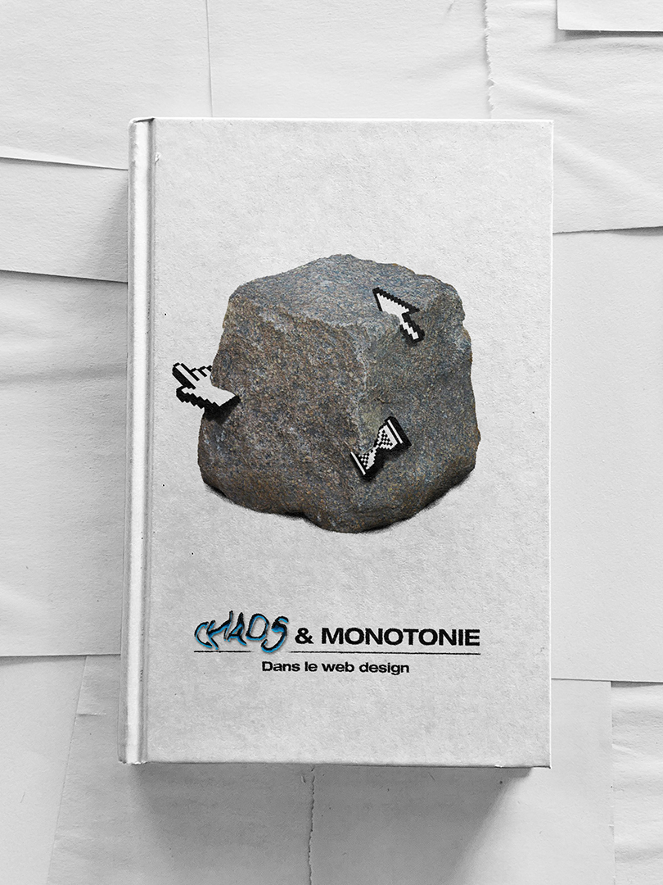
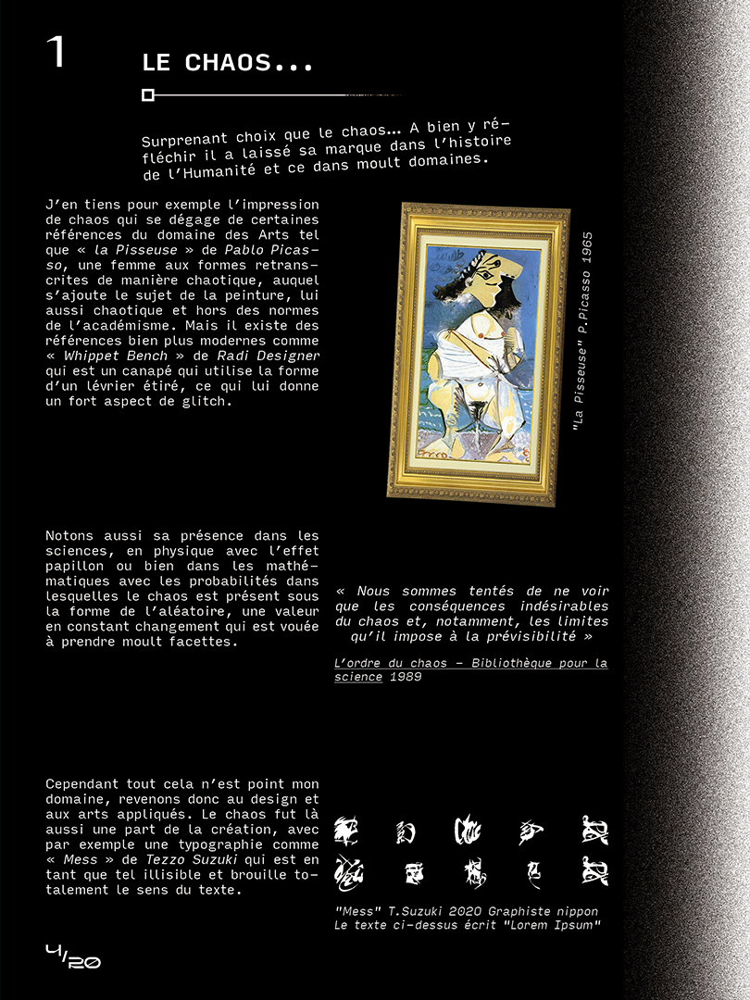

Chaos et monotonie dans le web design
Premier mémoire portant sur la problématique « Chaos et monotonie : Confrontation ou Cohabitation ? ». Provenant d’un certain ennui pour un web fade et de moins en moins diversifié, mes recherches m’ont permis de mieux comprendre le web, son historique et son évolution dans l’influence sur nos usages et les manières de créer et penser le web design. Ce fut aussi l’occasion de me nourrir de références diverses dans la création d’interfaces et les possibilités d’interactions dans le web.

